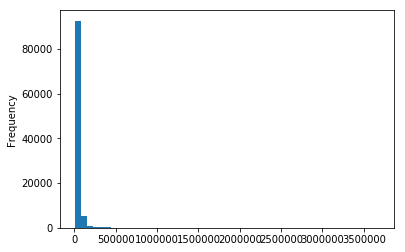
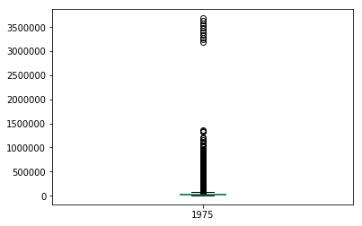
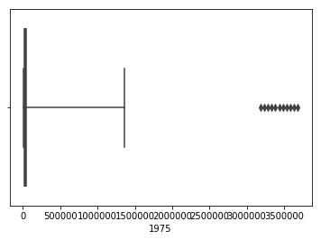

In [11]:
%matplotlib inline
import matplotlib.pyplot as plt
import pandas as pd
In [35]:
df = pd.read_excel('data/incomedata.xlsx', index = None)
In [36]:
df.head()
Out[36]:
| Person | 1975 | 1985 | 1995 | 2005 | |
|---|---|---|---|---|---|
| 0 | 1 | 37280.298071 | 15684.788394 | 19324.405059 | 21971.486238 |
| 1 | 2 | 22057.861803 | 38443.490234 | 5722.731915 | 18077.284677 |
| 2 | 3 | 13355.864804 | 11610.792452 | 13510.415293 | 19486.173745 |
| 3 | 4 | 21318.635891 | 27134.091061 | 20619.693308 | 35598.381026 |
| 4 | 5 | 15110.658003 | 59795.833192 | 8431.221592 | 34546.833459 |
In [37]:
df.columns
Out[37]:
Index(['Person', 1975, 1985, 1995, 2005], dtype='object')
In [38]:
df[1975].plot(kind = 'hist', bins = 50)
Out[38]:
<matplotlib.axes._subplots.AxesSubplot at 0x1a1dca4c50>

In [39]:
df[1975].plot(kind = 'box')
Out[39]:
<matplotlib.axes._subplots.AxesSubplot at 0x110f7e7b8>

In [40]:
df.shape
Out[40]:
(100000, 5)
In [41]:
import seaborn as sns
In [52]:
sns.boxplot(df[1975], whis = 99.9)
Out[52]:
<matplotlib.axes._subplots.AxesSubplot at 0x110be2550>

In [45]:
sns.boxplot?
In [ ]:
from pandas_datareader import wb
In [ ]:
mathces = wb.search('gdp.*capita.*const')
In [ ]:
dat = wb.download(indicator='NY.GDP.PCAP.KD', country=['US', 'CA', 'MX', 'NZ', 'CN'], start=2005, end=2008)
In [ ]:
type(dat)
In [ ]:
dat.columns
In [ ]:
dat.iloc[4:, 0]
In [ ]:
dat.iloc[:4]
In [ ]:
dat['NY.GDP.PCAP.KD'].groupby(level=0)
In [ ]:
dat['NY.GDP.PCAP.KD'].groupby(level=0).describe()
In [ ]:
dat['NY.GDP.PCAP.KD'].groupby(level=0).mean().plot(kind = 'bar')
In [ ]:
dat['NY.GDP.PCAP.KD'].groupby(level=1).mean().plot(kind = 'bar')
In [ ]:
dat.iloc[:4, :1].plot(kind = 'bar')
dat.iloc[:8, :1].plot(kind = 'bar')
In [ ]:
%matplotlib inline
import matplotlib.pyplot as plt
import seaborn as sns
In [ ]:
sns.barplot(df['NY.GDP.PCAP.KD'])
In [ ]:
df.loc[df['Year'] == 1980]
In [ ]:
%matplotlib inline
df.loc[df['Year'] == 1980].plot()